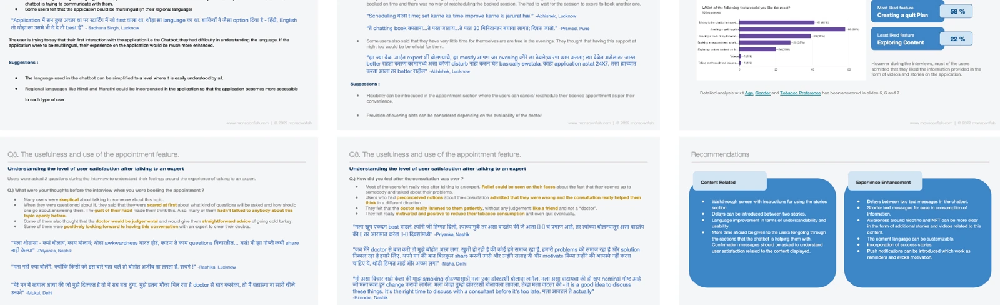
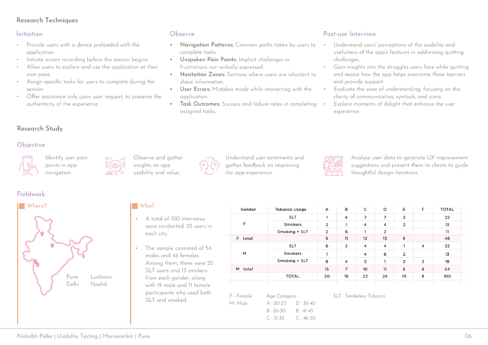
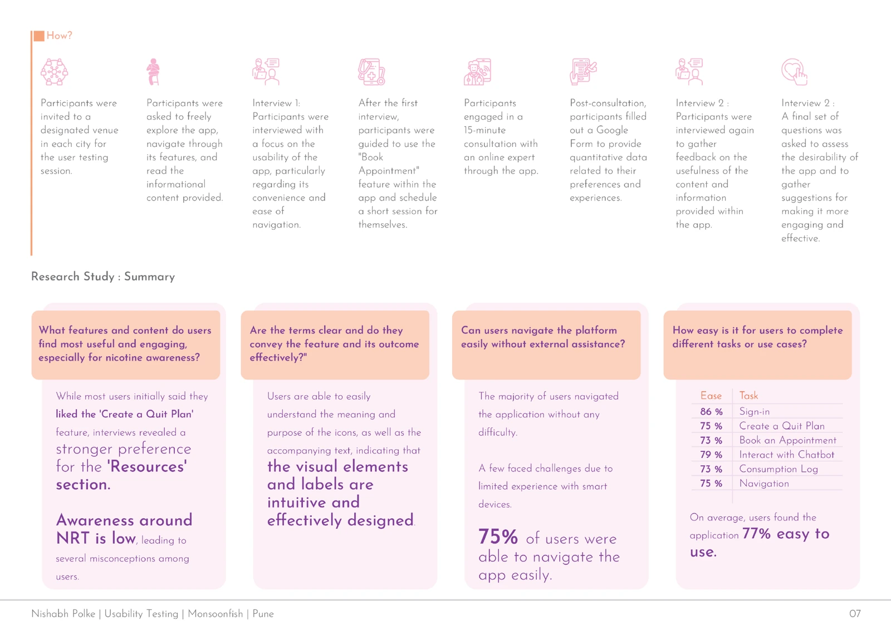
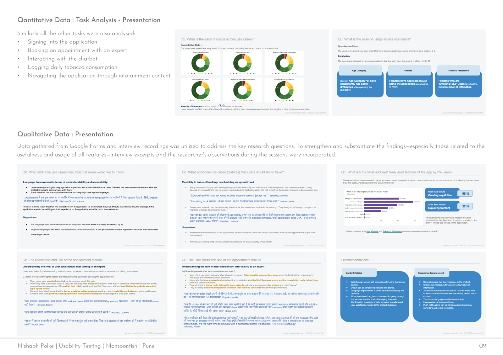
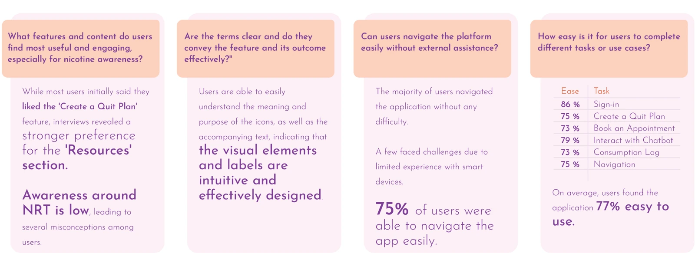
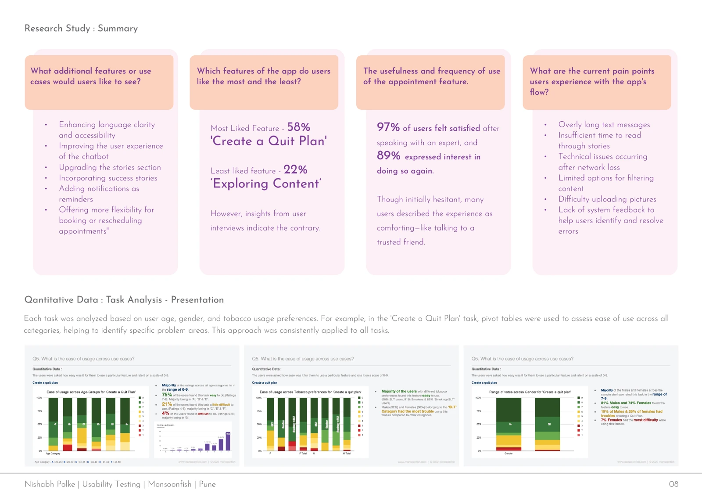
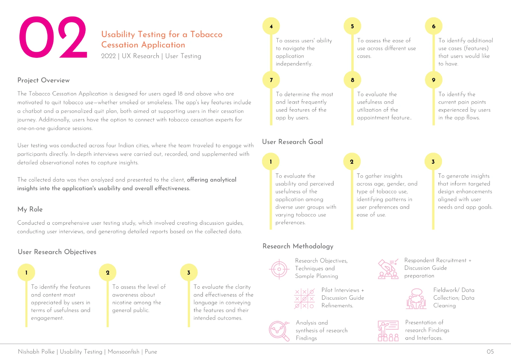

Testing the journey to expert support.
A usability study of a tobacco-cessation app, examining navigation, content, and the experience of getting expert support.
- Project
- Tobacco-cessation usability
- My role
- UX researcher
- Context
- Monsoonfish
- Year
- 2022

The context
The application supported adults who wanted to stop using smoked or smokeless tobacco. It included a personalized quit plan, a chatbot, resources, and appointments with tobacco-cessation experts.
The study took place across four Indian cities. The team combined direct observation, interviews, and quantitative feedback to understand usability and perceived usefulness.
My contribution
I created discussion guides, conducted user interviews and testing, and prepared reports from the collected data as part of the research team.
Usability testing · Interviews · Mixed-method analysis
Follow the research.
From the original project documentation
Watch people explore
Observe navigation and follow up with an interview about the experience.

Follow the consultation journey
Book an appointment, attend a consultation, and gather feedback afterward.

Read the evidence together
Compare task ratings with the themes emerging from interviews.


The approach
Start with exploration
Participants explored the app and its content before an interview about navigation, convenience, and ease of use. Observation captured where they hesitated, needed help, or interpreted an interaction differently.
Follow the appointment journey
Participants booked and attended a 15-minute online consultation through the app. They then completed a feedback form and follow-up interviews about the content, experience, and future use.
Analyze tasks and conversations together
Task ratings were examined by age, gender, and tobacco-use preference. Interview responses added context to the numbers and were organized into themes for the client.

What to noticeThe study combined observation, interviews and a participant profile. The methods were chosen to examine both task performance and perceived usefulness.



What to noticeFollow the sequence from exploration to the expert consultation. Feedback was collected at several points rather than only at the end.
What the research revealed
Interviews added context to stated feature preferences.
Stated preferences needed more context
Initial responses favored creating a quit plan, while later interviews revealed stronger interest in the Resources section. Reading the two together gave a fuller view of what people valued.
Expert support changed how participants felt
The portfolio reports positive feedback after consultations, including interest in using expert support again. Participants who had initially hesitated described feeling more comfortable after speaking to an expert.
Small interruptions added friction
The study documented long messages, limited time to read stories, problems after network loss, limited content filters, image-upload difficulty, and insufficient feedback when errors occurred.



What to noticeThe summary separates what participants liked, what they found difficult and what they wanted changed. These are study findings, not clinical outcomes.

What to noticeTask ratings and interview themes appear together. The qualitative responses give context to patterns in the numbers.
The outcome
The team delivered task analysis, interview synthesis, and recommendations to the client. Suggested improvements included clearer language, more accessible content, better chatbot interactions, reminders, and more flexible appointment booking.
The documented results describe the study participants’ experience. They do not establish clinical effectiveness or sustained tobacco cessation, and the portfolio does not report implementation outcomes.
Download the UX portfolioOpen the research archive.
5 original portfolio pagesSee the full documentation behind this case study. Every image can be enlarged, and the source files are available to download.
View all 5 research artifacts

